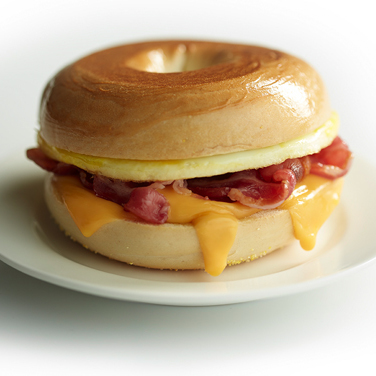

Bacon, Egg, and Cheese Bagels

Get any day of the week going with this timeless grease bomb of protein, dairy, and carbs.
Ingredients
- 6 strips of uncooked Oscar Myer bacon
- 3 eggs
- 2 Thomas bagels
- 2 slices of American cheese
Steps
- Cook strips of bacon in a frying pan until they a chewy with a light crisp
- Remove bacon from pan onto a plate lined with paper towels to absorb the grease
- Mix the whites and yolks of three eggs in a small measuring cup and then cook egg mixture in the pan's grease, stirring while it cooks
- Divide cooked eggs into two portions that share a simliar diameter to the bagel
- Cut two bagels in half and toast to a light brown
- Place a cooked egg portion on each of the bottom halves of toasted bagels
- Place one slice of cheese on each of the top halves of toasted bagels
- Break three slices of bacon into smaller pieces that can be balanced on top of the cooked eggs for each bagel
- Place top half of each bagel on top of the sandwich, letting the cheese melt atop the bacon and egg